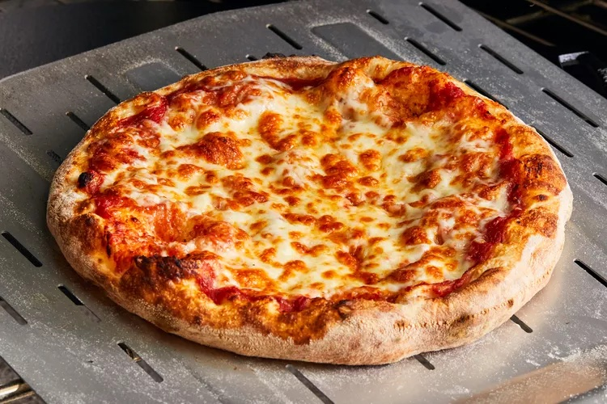

Pizza

Food Description
Pizza is a beloved Italian dish celebrated globally for its versatility and deliciousness. It consists of a round, flat base of leavened wheat-based dough topped with tomatoes, cheese, and often various other ingredients, such as meats, vegetables, and condiments. These toppings can be customized to suit personal tastes, making pizza a versatile option for any meal. Traditionally baked in a wood-fired oven, pizza features a characteristically chewy, crisp crust, a flavorful sauce, and a melty cheese topping. From the classic Margherita to more inventive creations, pizza embodies the essence of Italian culinary art with a global twist, enjoyed by people of all ages and backgrounds.
Ingredients
- 1 pre-made pizza dough or flatbread
- 1/2 cup pizza sauce
- 2 cups shredded mozzarella cheese
- 1/2 teaspoon dried oregano
- 1/2 teaspoon dried basil
- Toppings of your choice
Steps
- Preheat your oven to 475°F (245°C). If you have a pizza stone, place it in the oven to heat as well.
- Roll out your pizza dough on a lightly floured surface to your desired thickness. Transfer the rolled-out dough to a piece of parchment paper or a lightly greased baking sheet.
- Spread the pizza sauce evenly over the surface of the dough, leaving a small border around the edges. Sprinkle the shredded mozzarella cheese over the sauce. Arrange your chosen toppings on top of the cheese. Sprinkle with oregano and basil.
- Transfer the pizza (on the parchment paper, if using) to the preheated oven or pizza stone. Bake for 12-15 minutes, or until the crust is golden brown and the cheese is bubbly and slightly golden.
- Remove the pizza from the oven and let it cool for a few minutes before slicing. Serve hot.
This recipe provides a quick and customizable way to enjoy homemade pizza with minimal effort. Feel free to get creative with the toppings based on your preferences!